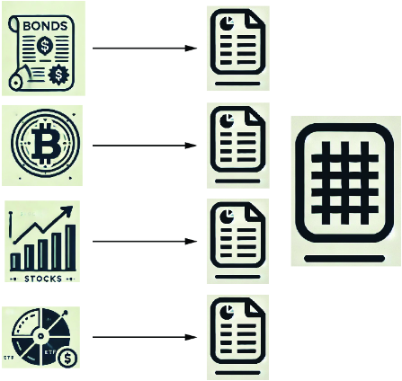
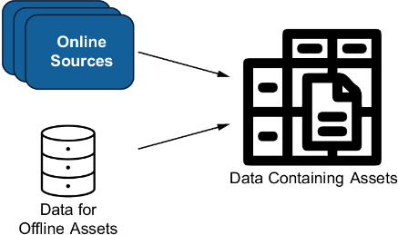
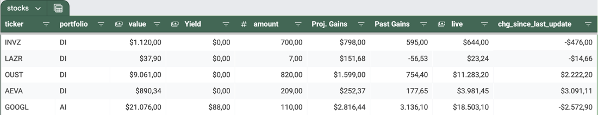
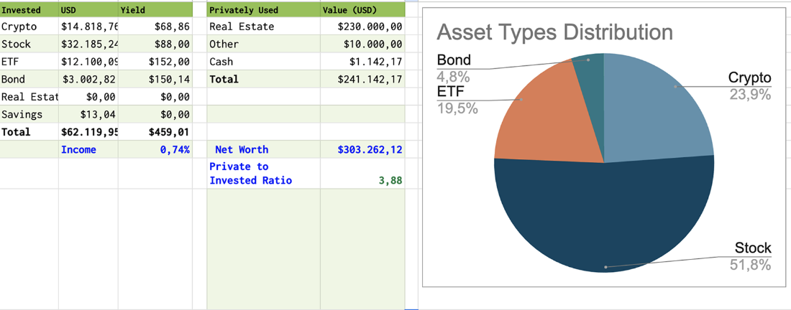
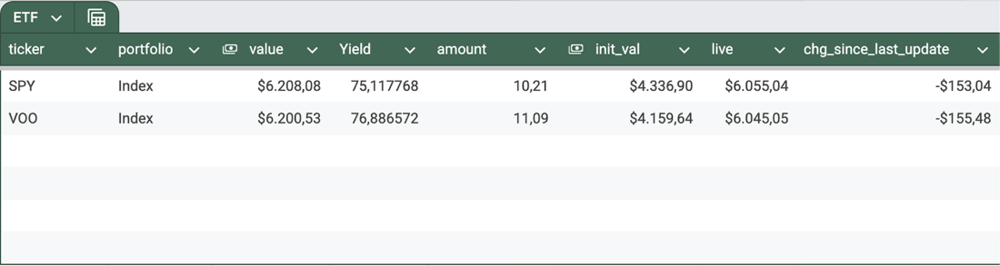
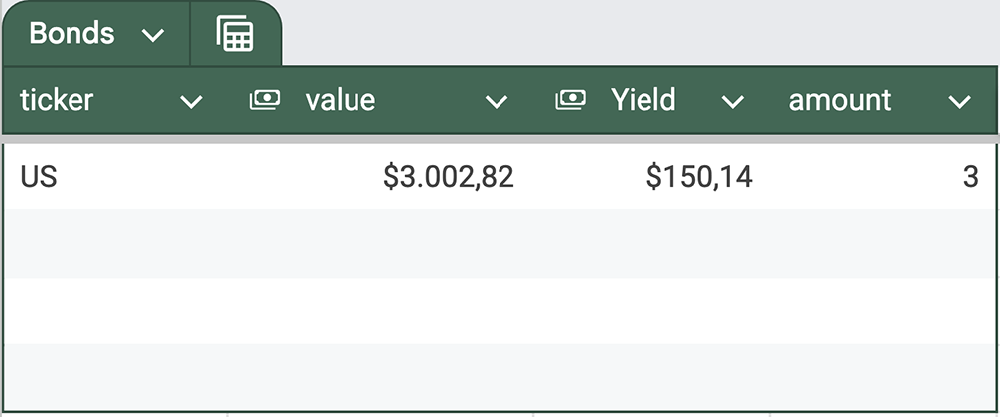
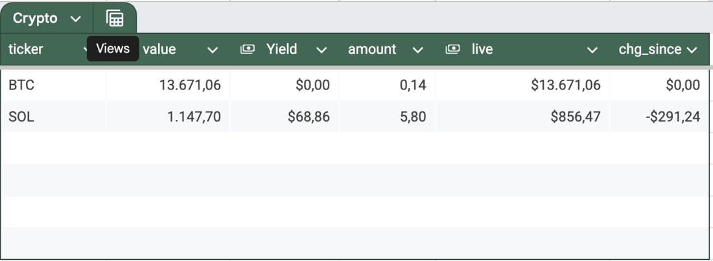

In the previous chapters, we showed how to select assets for possible investments. Assuming you might have already bought assets, it’s time to show you how to monitor existing portfolios. This chapter is about staying in control, staying informed, and maximizing the potential returns of your assets.
First, we’ll walk you through collecting your holdings from various brokers. Next, we’ll aggregate this data into clear, actionable insights: tracking your total passive income, identifying standout performers (both positive and negative), and uncovering areas for improvement. Finally, we’ll project your future earnings and growth to answer the big question: When will you hit your financial milestones?
We gather data using Google Sheets, enabling us to visualize our information, filter it, and delve deeper into the details. Let’s uncover the secrets to managing your stock portfolio like a pro. Ready to level up? Let’s get started.
Note The Git repository and the download sections contain a full-functioning Jupyter Notebook. The code snippets in this book help to understand the code, but not every helper variable is declared in the listings in the book. You can also refer to the appendix to learn about the required Python libraries.
In this chapter, we’ll build a data science notebook to consolidate information about your holdings from various sources into a central repository. We aim to track key metrics, including the current portfolio value and projected annual returns from capital appreciation and passive income. As illustrated in figure 6.1, we’ll extract data for each asset category and export it to dedicated worksheets, allowing you to view stocks, crypto, bonds, and other asset types in separate spreadsheet tabs.

This chapter will gather data from two stockbrokers and one cryptocurrency exchange as a demonstration portfolio. Even if you use different platforms, the provided code samples can serve as templates for building custom data pipelines to collect information from your broker.
Hundreds of institutions and products, such as banks, brokers, exchanges, and crypto wallets, offer you the ability to store assets worldwide. Unfortunately, they don’t use a single standard to provide you with access to your portfolio using code. Some of them may not offer access at all that supports automated data retrieval.
Figure 6.2 illustrates the data extraction challenge: while some assets can be retrieved from multiple platforms, others may not be accessible via API. To address this, we merge online data with manually tracked holdings. An exception arises with an asset with no digital footprint, such as real estate. Entering these details manually into a spreadsheet may be the most practical approach.

Let’s create a table to track all holdings without automated data retrieval, named offline_asset. The Jupyter Notebook, available for download at the publisher’s website, uses an SQLite database as file-based storage, which is ideal for demonstration and exploration. These notebooks may declare some variables that aren’t listed in the examples.
Following is the Data Definition Language (DDL) statement for the database table you need to execute in a SQL console connected to the database. In the appendix, we’ll provide some guidelines for those who aren’t familiar with SQLite. In the code repository, we also have a small reference database with some prefilled datasets. If you start working with your data, you also need to fill in these tables with additional entries that reflect your portfolio.
create table main.offline_asset
(
ticker TEXT
constraint InterestTable_pk
primary key,
yield REAL,
avg_price REAL,
exchange TEXT,
amount REAL,
asset_type TEXT
);
We use the ticker as a unique identifier. Even if we occasionally forget the company name behind that ticker, we can collect all the required data once we uniquely identify the asset. We use the yield column for passive income from assets such as bonds, stocks with dividend payments, or cryptos with staking options. The avg_price column reflects the weighted average price of all past purchases.
We also track where we hold an asset in the exchange column and record the shares we own in the amount column. Finally, we need the asset_type column to identify the asset type, such as stock, exchange-traded funds (ETFs), crypto, or bond.
Once the table is created, we must add our position as a dataset. The following command loads the offline data into a DataFrame with a one-liner. We’ll later merge the content of this DataFrame with the data collected from brokers and exchanges:
all_offline_assets = pd.read_sql('offline_asset', engine, index_col='ticker')
This chapter’s complete notebook can be downloaded from the publisher’s website. The chapter will explain essential data extraction, transformation, and export code.
Before describing the logic, let’s look at the expected outcome. We export data into a spreadsheet, and you can download a template from https://mng.bz/Bzyl. Clone this template, and set up the appropriate permissions to access the spreadsheet. Afterward, you can download a JSON file containing all the required parameters to access the Google Sheet document online. Once you’ve set this up correctly, including references to this file in your source code, you can export the financial data into the worksheets using the code we’ll introduce in this chapter. Alternatively, you can download a Microsoft Excel file from the download section and convert it to a Google Sheets document. The file is also available in the book’s GitHub repository (https://github.com/StefanPapp/investing-for-programmers).
Let’s explore what the worksheets will look like. Figure 6.3 shows a screenshot featuring reference data on stocks. Note that each ticker is part of a portfolio, and you can filter by each column. We display the number of shares we own for a ticker, the total value, and the expected yearly yield. We also calculated potential losses or gains in two columns. The Live column represents real-time data gathered through cell formulas that pull information from Google Finance. While the Value column represents the total value of a position at the time of export, we can also track changes since the last update with live data.

Figure 6.4 shows the overview page of this spreadsheet template called “assets,” which also contains some reference data. On this worksheet, we sum up the value and yields of all assets. The graph shows the asset type distribution, giving you a good overview of your distribution. You can see right away, for instance, that this reference dataset represents a perilous portfolio as most risk-averse investors would prefer to have a far higher distribution on index funds, which are held as ETFs.

We’ll now demonstrate how to collect data, extract essential metrics, convert all values to a single currency (in case we hold assets in different currencies), and export that data to a Google Sheet. Let’s get started!
Stockbrokers facilitate the trading and holding of assets for investors. This book examines two brokers that offer Python APIs for accessing account balances: Alpaca and Interactive Brokers. Unlike many brokers restricted to specific countries, both provide services internationally, making them accessible to readers around the globe. Remember that registering with a broker requires identification, such as a passport, as well as information about your tax residency. This procedure is known as Know Your Customer (KYC) and is mandatory for the investment services industry. In the appendix, we’ll provide more insights about brokers.
Note Take time to research a broker. Many brokers restrict their services to a few countries. Higher or lower order and transfer fees may affect gains and losses. If you want to automate, be aware that not every broker offers APIs to their clients. Validate that every broker is serious. If you’re in doubt, inquire about the broker with a financial advisor.
To process data from various sources, we need to store it in a unified format and merge it. Therefore, we must define the target data structure for our DataFrames. Let’s examine the required attributes:
INTERACTIVE_BROKER or ALPACA. Alpaca markets itself as a developer-first broker, offering modern APIs designed for seamless integration into your workflows. To use the Alpaca platform, you’ll need an account, and you must generate access keys on this account. These keys enable programmatic access to your account for tasks such as retrieving balances or executing trades.
For this book’s showcase, we use the dotenv library to load the keys securely from a plain text .env file. Be cautious if you use this library!
Warning Avoid storing sensitive information on shared or unsecured computers. Stolen keys can lead to unauthorized actions that could compromise your account.
Ensure the .env file contains your keys in this format:
ALPACA_API_KEY=your_api_key_here ALPACA_SECRET_KEY=your_secret_key_here
Once your environment is correctly configured, listing 6.1 demonstrates how to connect to Alpaca using the py-alpaca library. After creating the trading_client object, we call the get_all_position() method to load every dataset into the DataFrame. We also select the columns to create a data structure that can be merged with the data from other brokers. Install the Python package for Alpaca via pip install alpaca-py.
from alpaca.trading.client import TradingClient
ALPACA_KEY = os.getenv("ALPACA_API_KEY") #1
ALPACA_SECRET = os.getenv("ALPACA_SECRET_KEY") #1
trading_client = TradingClient(ALPACA_KEY, ALPACA_SECRET, paper=False)
positions_data = [
[position.symbol, position.qty,
position.avg_entry_price,
position.exchange.value, 'ALPACA'] #2
for position in trading_client.get_all_positions() #2
]
alpaca_balances = pd.DataFrame( #2
positions_data, #2
columns=[COL_TICKER, COL_AMOUNT, COL_PRICE_INIT,
COL_EXCHANGE, COL_BROKER]) #2
If you don’t want to invest real money and want to experiment, you can also use Alpaca’s paper accounts by setting the parameter paper to true. You can see a paper account as a test environment for investing.
Note Alpaca only supports US dollars as currency. Although transferring money in any currency to Alpaca is possible, remember that international transfers that convert currency can be expensive. Investors often must also wait days for the funds to arrive. You can transfer cryptocurrency to bypass currency conversion and convert your crypto tokens to USD on Alpaca.
Founded in 1978, Interactive Brokers has built a reputation as a feature-rich platform for investors. However, some programmers find its approach to integrating APIs a bit old-school. Unlike modern cloud-based brokers, Interactive Brokers requires installing a local application, the Trader Workstation (TWS), to access data through a Python API. APIs connect to this workstation, adding complexity for developers building cloud-based investment solutions.
That said, once set up correctly, Interactive Brokers offers powerful tools for retrieving and managing investment data. With the ib_insync library, you can connect to the TWS programmatically. Note that, depending on your configuration, you must adjust some settings in the TWS. We’ll add more details in the appendix. Listing 6.2 shows how to retrieve data using this library. We collect the data for our positions by calling the positions() method. We unwrap the data from the returned data structure and ensure that we have all the data in the same structure as the data from Alpaca.
from ib_insync import * #1
util.startLoop() #1
ib = IB() #1
ib.connect() #1
ibr = util.df(ib.positions()) #2
ibr[COL_TICKER] = (ibr.contract.apply
(lambda x: x.symbol)) #2
ibr["exchange"] = (ibr.contract.apply
(lambda x: x.exchange)) #2
ibr["broker"] = "INTERACTIVE_BROKER" #2
IB_balances = (ibr[[COL_TICKER, 'position', 'avgCost',
COL_EXCHANGE, COL_BROKER]].
rename(columns={'position': COL_AMOUNT,
'avgCost': COL_PRICE_INIT}))
We now have data in two DataFrames containing information from two brokers arranged in the same data structures. Additionally, we have a DataFrame that includes offline assets. We can merge them as shown here:
all_positions_raw = pd.concat([alpaca_balances, IB_balances, offline_assets])
All the information from our data sources is now consolidated into one DataFrame. We’ve completed the data extraction.
We aim to use the tickers in the all_positions_raw DataFrame as identifiers to obtain financial data from Yahoo Finance and Google Finance. We must complete one remaining task before merging the data from our holdings with information from this platform. In most instances, the tickers that brokers provide align with those found on financial platforms. However, exceptions do exist. For example, shares of Berkshire Hathaway with the ticker BRK.B are identified as BRK-B on Yahoo Finance. We can create a lookup table that maps broker tickers to those used on financial platforms to prevent issues arising from mismatched tickers.
We’ll also use this table to map each asset to a portfolio. This allows an investor to group similar assets, which can be crucial when filtering and comparing performances on a more abstract level. Following is a list of the five columns we need for this lookup table:
One of the simplest techniques for demonstration purposes is again using SQLite to store these values. We can create a table for the asset lookup using DDL and SQL commands:
create table main.asset_lookup
(
ticker TEXT not null
constraint base_security_pk
primary key,
asset_type TEXT not null,
portfolio TEXT,
yahoo TEXT,
google TEXT
);
When we populate this table with data from our holdings, we can retain NULL values for the yahoo and google columns if there are no discrepancies between the data from brokers and the corresponding financial platform. Listing 6.3 illustrates how to load data from a local SQLite database. Once loaded, these columns are combined with all_positions_raw, which contains our positions in memory. We also populate all identifiers with the ticker column value if there is no mismatch between tickers. In other words, assuming we’ve stored “BRK-B” for Yahoo Finance, we end up with a mapping between BRK.B (for the ticker column) and BRK-B (for the yahoo column). If the yahoo or google columns are null, we populate them with the value in the ticker column. Note that you must fill in all the rows with data representing your portfolios to work with this lookup table for your positions.
from sqlalchemy import create_engine
engine = create_engine('sqlite:///portfolio.sqlite')
asset_lookup = pd.read_sql('asset_lookup',
engine,
index_col=COL_TICKER) #1
all_positions = all_positions_raw.merge(asset_lookup, on=COL_TICKER)
all_positions[COL_YAHOO] = (all_positions[COL_YAHOO].
fillna(
all_positions[COL_TICKER])) #2
all_positions[COL_GOOGLE] = (all_positions[COL_GOOGLE].fillna(
all_positions[COL_TICKER])) #2
Finally, we can start processing data. The function collect_fin_data, as shown here, expects a list of tickers and returns an object with all company information for the assets:
def collect_fin_data(tickers):
return {ticker: yf.Ticker(ticker).info for ticker in tickers}
If you pass a long list, the query might run for a couple seconds as the Ticker function in the loop downloads data from Yahoo Finance for multiple assets.
Now that we’ve enriched data, it’s time to go into further detail and show how to aggregate data for assets. The section on stocks will also show you how to convert assets held in different currencies to a unified currency, which can also be applied to other assets.
The following code extracts stocks and collects all information using the collect_ fin_data method. We filter the stocks from our data collection for all our assets and collect the data for the companies:
shares = all_positions[all_positions[COL_ASSET_TYPE].isin(["STOCK"])] unique_stock_tickers = shares[COL_YAHOO].unique().tolist() yfin_data_stocks = collect_fin_info(unique_stock_tickers)
We now have Yahoo data for all of our stocks in the DataFrame yfin_data, which allows us to merge relevant attributes into the DataFrame holding our shares. The function merge_fin_data, shown in listing 6.4, extracts the desired metrics we pass as a parameter.
def merge_fin_data (df_orig, ticker_data, metrics):
df = df_orig.copy(deep=True)
for m in metrics:
df[m] = None
for ind in df.index:
ticker_symbol = df.loc[ind, "yahoo"] #1
company = ticker_data.get(ticker_symbol, {}) #1
for m in metrics: #2
df.loc[ind, m] = company.get(m, None) #2
return df
ratios = ["currentPrice", "targetMeanPrice", "dividendRate"]
stocks = merge_fin_data(shares, yfin_data_stocks, ratios)
One challenge can be different currencies. For example, an individual investor might hold Microsoft shares, listed on NASDAQ, in US dollars; in parallel, he might hold BMW shares, listed on the Frankfurt Stock Exchange (FSE), in euros. Converting all positions into a single currency helps sum up the total value of our assets. The code in listing 6.5 provides us with a method for conversion using the Python library CurrencyConverter. Note that we need to agree on a target currency. In the code, we map the exchange—each exchange trades money in its country’s currency—to the US dollar as the target currency by default.
Note Some investors try to avoid different currencies as they add additional risks through fluctuations in exchange rates. There are also special types of stocks called American Depositary Receipts (ADR) that allow a foreign company to list on a local exchange. However, this isn’t available for all assets.
A showcase mapping can only contain a minimum set of exchanges, such as Euronext Amsterdam (AEB) or Vienna Stock Exchange (VSE). Extend this list to include any exchanges you might be using that aren’t covered by the mapping.
from currency_converter import CurrencyConverter
def get_conversion(target_currency = "USD"):
c = CurrencyConverter()
mapping_exchange_currency = { #1
'ARCA': c.convert(1, 'USD', target_currency),
'NASDAQ': c.convert(1, 'USD', target_currency),
'NYSE': c.convert(1, 'USD', target_currency),
'BATS': c.convert(1, 'USD', target_currency),
'PINK': c.convert(1, 'USD', target_currency),
'IBIS': c.convert(1, 'EUR', target_currency),
'AEB': c.convert(1, 'EUR', target_currency),
'VSE': c.convert(1, 'EUR', target_currency),
'AMEX': c.convert(1, 'USD', target_currency),
'BVME': c.convert(1, 'EUR', target_currency),
'SBF': c.convert(1, 'EUR', target_currency),
'EBS': c.convert(1, 'CHF', target_currency),
'CPH': c.convert(1, 'DKK', target_currency),
'PRA': c.convert(1, 'CZK', target_currency)
}
return mapping_exchange_currency
conversion = get_conversion() #2
Once this is set up, we can convert all columns with different currencies into one standardized currency. The code in listing 6.6 converts the following parameters of an asset into a single currency:
Let’s examine the code in the listing to perform the conversion. We pass the column name containing values in different currencies as a parameter for this conversion. In this code sample, we convert the initial price, current price, and yield into US dollars.
def convert(row, column_name):
return (row[column_name] *
conversion[row[COL_EXCHANGE]]) #1
df[COL_PRICE_INIT_USD] = df.apply(convert,
column_name=COL_PRICE_INIT,
axis=1) #1
df[COL_PRICE_USD] = df.apply(convert,
column_name=col_price,
axis=1) #2
df[COL_YIELD_USD] = df.apply(convert,
column_name=col_yield,
axis=1) #2
The information in the DataFrame is per single share. Listing 6.7 shows how to aggregate values based on the number of shares we own. As we likely have more than one share for each position, we must multiply the values, such as price or yield, by the number of shares to get a position’s total value and yield. Based on the price estimations, we can also calculate past and potential future gains and losses.
df[COL_TOT_INIT_VALUE] = (df[COL_AMOUNT] * df[COL_PRICE_INIT_USD]).round(2) df[COL_TOT_VALUE] = (df[COL_AMOUNT] * df[COL_PRICE_USD]).round(2) df[COL_TOT_YIELD] = df[COL_AMOUNT] * df[COL_YIELD_USD] df[COL_PAST_GAIN] = df[COL_TOT_VALUE] - df[COL_TOT_INIT_VALUE] df[COL_PROJ_GAIN] = ((df[COL_TARGET_PRICE] - df[COL_PRICE_USD]) * df[COL_AMOUNT])
Because we have all the data we need, it’s time to export it to a Google Sheets document. We’ll use the gspread library for this purpose. It’s essential to establish the necessary permissions to write to that document. Numerous guides online explain how to set up access to Google Sheets for applications. Ultimately, you’ll obtain a JSON file containing the key required for authentication.
Additionally, safeguard your access key. Although someone accessing a spreadsheet with your investments might not lead to financial loss, it’s still concerning to think that unauthorized individuals could gain insight into your investment portfolios.
Once the security is properly set up, we export all data to a worksheet called stock. The code provided here includes two methods. The first method accepts the worksheet name and the data from the worksheet, and the second method then exports that data:
def export_df_to_sheet(worksheet_name, df):
worksheet = get_spreadsheet().worksheet(worksheet_name)
worksheet.update([df.columns.values.tolist()] + df.values.tolist())
Extracting a DataFrame into a Google sheet is simple, but listing 6.8 shows how to add live data. In this method, we assemble a cell function for a cell in Google Sheets that collects data live from Google Finance using the ticker as an identifier. First, we need to find a column character position based on the position in the table. So, if, for instance, the “total value” is in the fourth position, we would get the character D. Then, we parse through all the tickers, create the cell function, and export it to the dedicated cell identified by the column position and the iteration counter through the ticker array.
col_amount_character = (get_char_by_col_pos
(pos_col_amount)) #1
col_tot_val_character = (get_char_by_col_pos
(pos_col_tot_val)) #1
col_live_character = (get_char_by_col_pos
(pos_col_live)) #1
col_update_character = (get_char_by_col_pos
(pos_col_live+1)) #1
update_cols = []
counter = 0
for ticker in tickers:
update_cols.append(f'=GOOGLEFINANCE("{ticker}")*'
f'{col_amount_character}'
f'{counter+2}') #2
counter += 1
worksheet.update([update_cols],
col_live_character + "2",
raw=False,
major_dimension = "COLUMNS" ) #3
Exporting stocks to the worksheet gives us a solid foundation to export additional assets. We can reuse some of the code developed for stocks. Let’s explore how to process ETFs, bonds, and cryptocurrency positions and export them to your spreadsheet.
Exchange-traded funds (ETFs) are identified by a symbol or ticker, such as VOO for the Vanguard S&P 500 or SPY for the SPDR S&P 500 Trust. Price updates occur during the exchange’s opening hours. ETFs also sometimes pay dividends to shareholders.
You can collect ETF data with yfinance using the same interface as stocks. The ratios provided by the interface are slightly different. A yfinance ticker object for stocks (a single company) provides results different from pooled investments (many assets). The price-to-earnings (P/E) ratio returned by the methods of the object that has loaded MSFT reflects data from Microsoft. If we load Vanguard S&P 500 data identified by VOO into a ticker object, the P/E ratio will represent the weighted average of all P/E ratios of the assets pooled in that ETF.
Let’s collect and export all ETFs to a new worksheet in the spreadsheet. We can reuse the merge_value_into_df function to enrich the data we collected from the brokers with yfinance data. The ratio navPrice represents the current market value of an ETF, and yield refers to the passive income that is paid out:
all_etfs_held = all_ positions[all_positions['asset_type'].isin(["ETF"])]
full_etf_data = all_etf["yahoo"].unique().tolist()
essential_etf_data = merge_values_into_df(all_etfs_held,
full_etf_data,
["navPrice", "yield"])
After collecting all ETFs, we can convert the currency to a valuation by a single currency. It works the same way with stocks, as shown earlier in listing 6.6. In addition, aggregating and exporting work similarly. As we’ve encapsulated the code into a function (see listing 6.9), the code to process ETFs is reduced to a few lines.
all_etfs_held = all_positions[all_positions['asset_type'].isin(["ETF"])]
yfin_data_etf = collect_fin_data(all_etfs_held[COL_YAHOO].unique().tolist())
etf_info = merge_fin_data(all_etfs_held, yfin_data_etf, ["navPrice", "yield"])
etf_info = calculating_price_data(etf_info, "navPrice", "yield")
export_etf_columns = [COL_TICKER, COL_PORTFOLIO,
COL_TOT_VALUE, COL_TOT_YIELD,
COL_AMOUNT, COL_TOT_INIT_VALUE]
export_df_to_sheet(COL_WORKSHEET_ETF, etf_info[export_etf_columns])
add_live_data(COL_WORKSHEET_ETF,
etf_info[COL_GOOGLE].tolist(),
export_etf_columns)
One of the beautiful aspects of using libraries such as yfinance is that, ultimately, you can encapsulate a lot of functionality and easily add new assets if they share the same interface. We need to recognize that we should view ETFs differently than stocks, as specific metrics that apply to a single stock can’t be easily aggregated for pooled investments.
Figure 6.5 outlines the worksheet for ETFs with sample data. Be aware that some data, such as projected target price, is missing because it can’t be obtained through yfinance.

If you buy stocks, you’ll recognize companies by their ticker symbols. So, after some experience, you might refer to holdings as MSFT, AAPL, or NVDA instead of Microsoft, Apple, and NVIDIA. The same thing can apply to ETFs. Although they might refer to a collection of assets, many investors understand symbols such as VOO or SPY as Vanguard S&P 500 ETF or SPDR S&P 500 ETF Trust.
Bonds are often more challenging to identify in data collected from a broker than stocks. Bonds are different because they are emitted at regular intervals, and each emission gets a different identifier. You can’t use the jargon to say you buy more VOO or NVDA. You lend money to an entity under given conditions, which includes coupon payment rates and maturity dates. If you decide to lend more money to a bond issuer on a later stage, you subscribe to a new emission with different conditions. You can still identify each bond through a unique identifier, such as an International Securities Identification Number (ISIN) such as US9128CLA70 on financial platforms.
So, instead of enriching data with yfinance, we can go a different route with bonds. The following code example shows how to migrate yield information that we store in the SQLite table offline_asset into the calculations. The yields of bonds are stored in the database, and we merge them into the DataFrame:
bond_rates = all_offline_assets[
all_offline_assets[COL_ASSET_TYPE].isin(['BOND'])
][["yield"]]
bond_df_merged_rates = all_bonds_held.merge(bond_rates, on=COL_TICKER)
bond_df_merged_rates[COL_TOT_YIELD] = (
bond_df_merged_rates[COL_TOT_VALUE]
* bond_df_merged_rates[COL_YIELD]
/ 100)
We could examine bond capital appreciation and, of course, extend this code to add risk ratings. However, these values rarely change if you invest cautiously in bonds, so we keep it simple. Figure 6.6 shows a bond worksheet with reference data.

In this example, we showcase how to retrieve information about assets from a crypto exchange. Listing 6.10 illustrates the functionality, using Binance as a reference example. We use the python_binance API. To gather the data, we employ the get_simple_ earn_locked_product_position and get_simple_earn_flexible_product_position functions. These methods return our holdings on Binance, depending on their status. We can lock them temporarily, which means we get higher staking returns, or have them available to sell at any time, reducing staking returns. The method returns all of our positions in the same data structure.
from binance.client import Client
binance_client = Client(os.getenv("exchange.binance.api"),
os.getenv("exchange.binance.secret"))
locked_assets = pd.DataFrame( #1
[
(pos["asset"], pos["amount"], pos["apy"])
for pos in binance_client
.get_simple_earn_locked_product_position()['rows']
],
columns=[COL_TICKER, COL_AMOUNT, COL_YIELD]) #1
flexible_assets = pd.DataFrame( #2
[(pos["asset"], pos["totalAmount"],
pos["latestAnnualPercentageRate"])
for pos in binance_client
.get_simple_earn_flexible_product_position()['rows']],
columns=[COL_TICKER, COL_AMOUNT, COL_YIELD]) #2
assets = pd.concat([locked_assets,
flexible_assets]) #3
assets = assets.astype({COL_AMOUNT: 'float',
COL_YIELD: 'float',
COL_TICKER: 'string'}) #3
assets.set_index(COL_TICKER, inplace=True) #3
As we’ve now collected the positions from Binance, we can also load our offline assets. In this example, we assume we have our cryptocurrency, which is associated with the keys we’ve stored on a hardware ledger. The amount and current staking rate are stored in the offline_asset table:
ledger_cryptos = all_offline_assets[
all_offline_assets[COL_ASSET_TYPE].isin(["CRYPTO"])]
As we now have all our cryptocurrency in a DataFrame, we only need to add the prices. We load the current prices from CoinMarketCap. The code in listing 6.11 shows how to do that. We first create a session object and then request the data based on the cryptocurrencies provided in a list and US dollars as the target currency. Lastly, we extract the price as a value to merge this into the DataFrame with our holdings. Be aware that you again need to register and get a secret to access CoinMarketCap.
session = Session()
session.headers.update({
'Accepts': 'application/json',
'X-CMC_PRO_API_KEY': os.getenv("broker.coinmarketcap.com")
})
res = session.get(
'https://pro-api.coinmarketcap.com/v2/'
'cryptocurrency/quotes/latest',
params={
'symbol': ','.join(df.index.unique()),
'convert': 'USD'
}
) #1
if res.status_code != 200:
print(f"API Error: {res.status_code} - {res.text}")
return df
data = res.json().get("data", {}) #2
prices = {
coin: data[coin][0]['quote']['USD']['price']
for coin in data
if 'USD' in data[coin][0]['quote']
} #2
df[COL_PRICE] = df.index.map(prices)
There’s one small detail to watch out for when exporting data. Google Finance doesn’t provide data on many cryptocurrencies on its platform. So, instead of Google Finance, we need to load data from a different provider. The code for assembling is outlined here:
update_cols.append(
f'=IFERROR(REGEXREPLACE('
f'IMPORTDATA("https://cryptoprices.cc/{ticker}");'
f'"[.]";","'
f')*{col_amount_character}{counter+2};'
f'{col_tot_val_character}{counter+2})'
)
We load the data from the Crypto Prices site (https://cryptoprices.cc). Because some errors may be returned, depending on the access frequency, we fill the cell with the value from the last export if we can’t obtain a proper value. Figure 6.7 shows an export of crypto assets into the crypto spreadsheet of the worksheet.

The Jupyter Notebook we developed throughout the chapter can be a template for creating your personal asset monitor. Within this framework, we establish a dedicated worksheet for each asset type, emphasizing a key concept. Although all assets have the potential for capital appreciation and passive income, their specific characteristics and behaviors vary significantly.
No book can provide a foolproof, step-by-step guide to getting rich overnight. If someone claims otherwise, it’s likely a scam. Think about it—if someone had a surefire way to create wealth from nothing, the odds of them sharing it with you are slim; they’d probably be sailing the world on a yacht or living among the ultra-rich.
A book like this can equip you with the tools to focus on the details necessary to make something solid. This asset monitor is a starting point. What aspects do you want to analyze in more detail? Perhaps you’re focused on a single asset class but want more profound insights. Why not create custom worksheets tailored to your interests—whether it’s risk analysis, environmental, social, and governance (ESG) factors, or valuation metrics? You decide what matters most.
Being able to track assets is a precondition for monitoring stock performance. If we can explore performance, we also have a good foundation for tracking risks. Let’s move on to chapter 7 for more details on that.